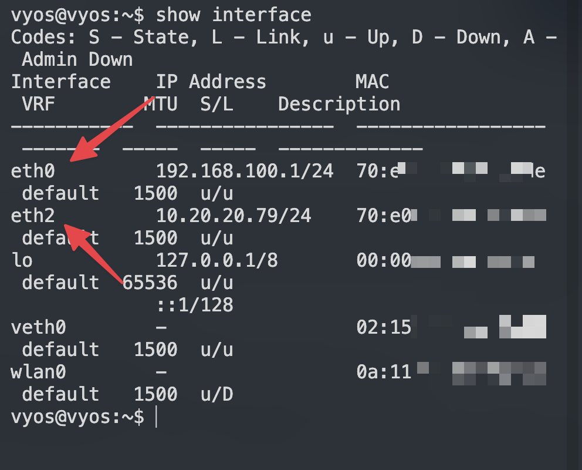

一.基本上网配置
vyos的命令行界面是基于shell的，没有图形界面, 但是可以用tab自动补全
本文的vyos命令是基于vyos的vyos-rolling-nightly-builds的1.5.x版本.
pve安装vyos: 下载安装包 pve的虚拟机设置和安装(略), 建议内存2G, 磁盘10G或更大, 因为vyos可以运行容器, vyos除自己的容器管理工具以外，也可以用podman管理容器. vm运行后, 用vyos:vyos登录. 用下面命令安装:
install image2.安装vyos.
进入配置模式：
configure生效：
commit保存配置：
save取消未commit生效的,未保存的配置：
discard延时确认：如2分钟后不确认，配置回滚到上一配置
commit-confirm 2回滚后 dircard 清除上次没有commit配置。(因为commit-confirm 2后已经输入过了，只是没有commit提交) 如果提前提效确认，直接输入：
confirm设置ssh登录:
set service ssh port '22'创建用户gary:
set system login user gary full-name gary
set system login user gary authentication plaintext-password '密码'建议ssh密钥登录:(可选，非必须，熟练后再使用）
set system login user gary authentication public-keys gary@laptop key 'your-public-key'
set system login user gary authentication public-keys gary@laptop type 'ssh-rsa'禁用默认的vyos用户:
set system login user vyos disable设置系统的hostname:
set system host-name 'vyos'查看系统的hostname
show system host-name设置时区:
set system time-zone 'Asia/Shanghai'设置ntp:
set service ntp server 129.250.35.251
set service ntp server 203.107.6.88(注: 可以设置多个ntp服务器, 建议用运营商的ntp服务器, 最好是纯ip, 可删除默认的ntp服务器)
先看下自己的接口情况，有的不是eht0和eth1。。。有的直接就是eth0和eht2,所以请根据自己小主机的情况调整后面的命令接口。
show interface
下面的教程按标准的eht0,eth1,eth2,eth3四网口来说明：
WAN/LAN 接口配置
- 进入配置模式
首先，进入 VyOS 配置模式：
configure- 创建桥接接口（br0）
接着，创建一个桥接接口 br0，并将 eth0、eth1 和 eth2 加入该桥接组：
set interfaces bridge br0 address '10.20.20.1/24'
set interfaces bridge br0 address 'fd88::1111/64'
set interfaces bridge br0 member interface 'eth0'
set interfaces bridge br0 member interface 'eth1'
set interfaces bridge br0 member interface 'eth2'3. 、 LAN 配置 DHCP
3.1 启用 LAN 口的 DHCP server LAN 的网段是 10.20.20.0/24，DHCP 的分配 IP 范围是 10.20.20.100-200，同时下发了 dns server 和 ntp server。
set service dhcp-server hostfile-update
set service dhcp-server shared-network-name LAN_br0 authoritative
set service dhcp-server shared-network-name LAN_br0 option ntp-server '10.20.20.1'
set service dhcp-server shared-network-name LAN_br0 option time-zone 'Asia/Shanghai'
set service dhcp-server shared-network-name LAN_br0 subnet 10.20.20.0/24 lease '86400'
set service dhcp-server shared-network-name LAN_br0 subnet 10.20.20.0/24 option default-router '10.20.20.1'
set service dhcp-server shared-network-name LAN_br0 subnet 10.20.20.0/24 option name-server '10.20.20.6'
set service dhcp-server shared-network-name LAN_br0 subnet 10.20.20.0/24 range 100 start '10.20.20.100'
set service dhcp-server shared-network-name LAN_br0 subnet 10.20.20.0/24 range 100 stop '10.20.20.200'
set service dhcp-server shared-network-name LAN_br0 subnet 10.20.20.0/24 subnet-id '1'设置固定IP
set service dhcp-server shared-network-name LAN_br0 subnet 10.20.20.0/24 static-mapping freepbx16 ip-address '10.20.20.103'
set service dhcp-server shared-network-name LAN_br0 subnet 10.20.20.0/24 static-mapping freepbx16 mac 'bc:24:11:c4:6f:eb'补充：(这下面的命令只是方便更改复制使用）
# 添加一个dns (这个dns是我后续不折腾佬的smbox的IP）
set service dhcp-server shared-network-name LAN_br0 subnet 10.20.20.0/24 option name-server '172.23.0.99'
# 添加一个dns (这个dns是我后续自己虚拟机mosdns的ip)
set service dhcp-server shared-network-name LAN_br0 subnet 10.20.20.0/24 option name-server '10.20.20.6'
# 删除一个dns
delete service dhcp-server shared-network-name LAN_br0 subnet 10.20.20.0/24 option name-server '10.20.20.1'
# 更改网关 （这个网关是我后续sing-box的IP）
set service dhcp-server shared-network-name LAN_br0 subnet 10.20.20.0/24 option default-router '10.20.20.9'3.2 局域网 DNS 配置
set system name-server '223.5.5.5'
set service dns forwarding allow-from '10.20.20.0/24'
set service dns forwarding listen-address '10.20.20.1'
set service dns forwarding cache-size '0' ## 关闭了缓存3.4 内网设备隐藏上网 masquerade(SNAT):
masquerade
set nat source rule 100 translation address 'masquerade' 指定网段：（可选） 可以不用！用了会限制wg.或者再添加wg网段等，不会就不要用！
set nat source rule 100 source address '10.20.20.0/24'设置回流: 由于上面masquerade(SNAT)的规则, 这里不需要设置回流.
到这一步基本的局域网配置就已经可以了，其他设备加入就可以自动dhcp获取 ip 并上网了。
四、QoS 流量管理（可选） Vyos 提供了非常完善的 Qos Policy，常见的流量策略都支持。家用不用那么麻烦直接使用 Cake 仅需要设置一下带宽，要注意的是启用 Qos 会占用 CPU，同时可能会导致带宽跑不满。好处是多人占用带宽时，可以为每一个人合理分配宽带资源。
set qos policy cake Qos_Cake_Lan bandwidth '1gbit'
set qos policy cake Qos_Cake_Lan description 'Qos For Lan interface br0'
set qos policy cake Qos_Cake_Lan flow-isolation dual-src-host
set qos policy cake Qos_Cake_Lan rtt '100'
set qos interface br0 egress 'Qos_Cake_Lan'五、防火墙
这里防火墙rule 数字可自定, 同一数字为一组, 建议设置数字时, 留出空隙, 以便以后添加新的规则. 针对上面这条nat source rule 100 规则, 建议不要限制接口, 就只用上面一条, 这对以后的端口转发和回流设置, 都很方便. 设置防火墙规则:
全局：
set firewall global-options state-policy established action 'accept'
set firewall global-options state-policy invalid action 'drop'
set firewall global-options state-policy related action 'accept'
set firewall global-options apply-to-bridged-traffic invalid-connections上面第四条也就是最后一条，作用是容器与内网互通（桥接）
设置ipv4入站(input链)规则:
set firewall ipv4 name WAN_LOCAL default-action 'drop' #默认拒绝
set firewall ipv4 name WAN_LOCAL rule 10 action 'accept' #允许已建立和相关连接
set firewall ipv4 name WAN_LOCAL rule 10 state 'established'
set firewall ipv4 name WAN_LOCAL rule 10 state 'related'
set firewall ipv4 name WAN_LOCAL rule 30 action 'accept' #允许icmp
set firewall ipv4 name WAN_LOCAL rule 30 protocol 'icmp'下面是wireguard放行端口（可选）
set firewall ipv4 name WAN_LOCAL rule 20 description "Allow WireGuard"
set firewall ipv4 name WAN_LOCAL rule 20 action 'accept' #允许连接wg0
set firewall ipv4 name WAN_LOCAL rule 20 destination port '11133'
set firewall ipv4 name WAN_LOCAL rule 20 protocol 'udp'#下面是放行连续端口样例：（例）
set firewall ipv4 name WAN_LOCAL rule 40 action 'accept' #连续端口样例
set firewall ipv4 name WAN_LOCAL rule 40 destination port '10000-10100'
set firewall ipv4 name WAN_LOCAL rule 40 protocol 'udp'设置ipv6入站(input链)规则:
set firewall ipv6 name WAN_LOCAL default-action 'drop' #默认拒绝
set firewall ipv6 name WAN_LOCAL rule 10 action 'accept' #允许已建立和相关连接
set firewall ipv6 name WAN_LOCAL rule 10 state 'established'
set firewall ipv6 name WAN_LOCAL rule 10 state 'related'
set firewall ipv6 name WAN_LOCAL rule 20 action 'accept' #允许icmpv6
set firewall ipv6 name WAN_LOCAL rule 20 protocol 'icmpv6'
set firewall ipv6 name WAN_LOCAL rule 30 action 'accept' #允许从ISP处获取的dhcp6的信息
set firewall ipv6 name WAN_LOCAL rule 30 destination port '546'
set firewall ipv6 name WAN_LOCAL rule 30 protocol 'udp'
set firewall ipv6 name WAN_LOCAL rule 30 source port '547'下面是wireguard放行端口（可选)
set firewall ipv6 name WAN_LOCAL rule 40 description "Allow WireGuard
set firewall ipv6 name WAN_LOCAL rule 40 action 'accept' #允许连接wg0
set firewall ipv6 name WAN_LOCAL rule 40 destination port '11133'
set firewall ipv6 name WAN_LOCAL rule 40 protocol 'udp'设置ipv4转发(forward链)规则:
set firewall ipv4 name WAN_IN default-action 'drop' #默认拒绝
set firewall ipv4 name WAN_IN rule 10 action 'accept' #允许已建立和相关连接
set firewall ipv4 name WAN_IN rule 10 state 'established'
set firewall ipv4 name WAN_IN rule 10 state 'related'设置ipv6转发(forward链)规则:
set firewall ipv6 name WAN_IN default-action 'drop' #默认拒绝
set firewall ipv6 name WAN_IN rule 10 action 'accept' #允许已建立和相关连接
set firewall ipv6 name WAN_IN rule 10 state 'established'
set firewall ipv6 name WAN_IN rule 10 state 'related'
set firewall ipv6 name WAN_IN rule 20 action 'accept' #允许icmpv6
set firewall ipv6 name WAN_IN rule 20 protocol 'icmpv6'下面三条输入，nat端口后不用再在防火墙里打开放行端口，nat优先放行
IPV4：
set firewall ipv4 name WAN_IN rule 20 action 'accept' #允许已DNAT的连接
set firewall ipv4 name WAN_IN rule 20 connection-status nat 'destination'
set firewall ipv4 name WAN_IN rule 20 state 'new'下面三条输入，nat端口后不用再在防火墙里打开放行端口，nat优先放行 IPV6：
set firewall ipv6 name WAN_IN rule 40 action 'accept'
set firewall ipv6 name WAN_IN rule 40 connection-status nat 'destination'
set firewall ipv6 name WAN_IN rule 40 state 'new'放行ipsec端口（举例：）
set firewall ipv6 name WAN_IN rule 30 action 'accept' #允许ipsec
set firewall ipv6 name WAN_IN rule 30 destination port '500,4500'
set firewall ipv6 name WAN_IN rule 30 protocol 'udp'然后分别从input和forward链, 调用WAN_LOCAL和WAN_IN: 设置接口组:
set firewall group interface-group WAN interface 'eth3'
set firewall group interface-group WAN interface 'pppoe1'然后分别从input和forward链, 调用WAN_LOCAL和WAN_IN:
set firewall ipv4 input filter rule 10 action 'jump'
set firewall ipv4 input filter rule 10 inbound-interface group 'WAN'
set firewall ipv4 input filter rule 10 jump-target 'WAN_LOCAL'
set firewall ipv4 forward filter rule 10 action 'jump'
set firewall ipv4 forward filter rule 10 inbound-interface group 'WAN'
set firewall ipv4 forward filter rule 10 jump-target 'WAN_IN'
set firewall ipv6 input filter rule 10 action 'jump'
set firewall ipv6 input filter rule 10 inbound-interface group 'WAN'
set firewall ipv6 input filter rule 10 jump-target 'WAN_LOCAL'
set firewall ipv6 forward filter rule 10 action 'jump'
set firewall ipv6 forward filter rule 10 inbound-interface group 'WAN'
set firewall ipv6 forward filter rule 10 jump-target 'WAN_IN'说明: DNAT（转发的端口）是流量进入后, 最先处理的, 然后进入forward链, 而SNAT是流量出站前, 最后处理的. 下面只是根据自己的情况复制选用：
留个pppoe接口（例）
set firewall ipv4 input filter rule 10 action 'jump'
set firewall ipv4 input filter rule 10 inbound-interface name pppoe1
set firewall ipv4 input filter rule 10 jump-target 'WAN_LOCAL'
set firewall ipv4 forward filter rule 10 action 'jump'
set firewall ipv4 forward filter rule 10 inbound-interface name pppoe1
set firewall ipv4 forward filter rule 10 jump-target 'WAN_IN'
set firewall ipv6 input filter rule 10 action 'jump'
set firewall ipv6 input filter rule 10 inbound-interface name pppoe1
set firewall ipv6 input filter rule 10 jump-target 'WAN_LOCAL'
set firewall ipv6 forward filter rule 10 action 'jump'
set firewall ipv6 forward filter rule 10 inbound-interface name pppoe1
set firewall ipv6 forward filter rule 10 jump-target 'WAN_IN'ETH3 wan口（例）
set firewall ipv4 input filter rule 10 action 'jump'
set firewall ipv4 input filter rule 10 inbound-interface name eth3
set firewall ipv4 input filter rule 10 jump-target 'WAN_LOCAL'
set firewall ipv4 forward filter rule 10 action 'jump'
set firewall ipv4 forward filter rule 10 inbound-interface name eth3
set firewall ipv4 forward filter rule 10 jump-target 'WAN_IN'
set firewall ipv6 input filter rule 10 action 'jump'
set firewall ipv6 input filter rule 10 inbound-interface name eth3
set firewall ipv6 input filter rule 10 jump-target 'WAN_LOCAL'
v
set firewall ipv6 forward filter rule 10 action 'jump'
set firewall ipv6 forward filter rule 10 inbound-interface name eth3
set firewall ipv6 forward filter rule 10 jump-target 'WAN_IN'IPV4端口转发（样例配置）：NAT端口转发 (配置样例）（不用下接口）
configure
# Synapse (TCP 12335)
set nat destination rule 10 description 'synapse'
set nat destination rule 10 destination port '12335'
set nat destination rule 10 protocol 'tcp'
set nat destination rule 10 translation address '10.20.20.8'
set nat destination rule 10 translation port '12335' # 同一个端口不填也可以
# SB_home (UDP 20521)
set nat destination rule 20 description 'SB_home'
set nat destination rule 20 destination port '20521'
set nat destination rule 20 protocol 'udp'
set nat destination rule 20 translation address '10.20.20.9'
set nat destination rule 20 translation port '20521' # 同一个端口不填也可以
# L2TP VPN (UDP 1701)
set nat destination rule 30 description 'L2TP'
set nat destination rule 30 destination port '1701'
set nat destination rule 30 protocol 'udp'
set nat destination rule 30 translation address '10.20.20.4'
set nat destination rule 30 translation port '1701' # 同一个端口不填也可以
# ISAKMP (UDP 500) - 用于 IKE（IPSec 密钥交换）
set nat destination rule 40 description 'ISAKMP'
set nat destination rule 40 destination port '500'
set nat destination rule 40 protocol 'udp'
set nat destination rule 40 translation address '10.20.20.4'
set nat destination rule 40 translation port '500' # 同一个端口不填也可以
# IPSEC NAT-T (UDP 4500) - NAT 穿透
set nat destination rule 50 description 'IPSEC'
set nat destination rule 50 destination port '4500'
set nat destination rule 50 protocol 'udp'
set nat destination rule 50 translation address '10.20.20.4'
set nat destination rule 50 translation port '4500' # 同一个端口不填也可以
# OpenVPN (TCP 1194)
set nat destination rule 60 description 'OPENVPN'
set nat destination rule 60 destination port '1194'
set nat destination rule 60 protocol 'tcp'
set nat destination rule 60 translation address '10.20.20.4'
set nat destination rule 60 translation port '1194' # 同一个端口不填也可以
# SIP (UDP 5060)
set nat destination rule 70 description 'SIP'
set nat destination rule 70 destination port '5060'
set nat destination rule 70 protocol 'udp'
set nat destination rule 70 translation address '10.20.20.17'
set nat destination rule 70 translation port '5060' # 同一个端口不填也可以
# SIP RTP (UDP 10000-10100)
set nat destination rule 80 description 'SIP_RTP'
set nat destination rule 80 destination port '10000-10100'
set nat destination rule 80 protocol 'udp'
set nat destination rule 80 translation address '10.20.20.17'
set nat destination rule 80 translation port '10000-10100' # 同一个端口不填也可以
commit
saveIPV6端口转发（样例配置）：NAT端口转发 (配置样例）（不用下接口）
set nat66 destination rule 10 description 'gohome'
set nat66 destination rule 10 destination port '10521'
set nat66 destination rule 10 protocol 'udp'
set nat66 destination rule 10 translation address 'fd99::9999'防火墙范围配置结束！
六、WAN 口 PPPoE 拨号配置
6.1 拨号配置 前提是光猫要改桥接，并且有宽带的拨号信息，先从光猫的 LAN 口接一条网线到 vyos 的eth3接口(wan口），并启用一个pppoe1的接口， 自动配置 MTU ：
set interfaces pppoe pppoe1 description 'China Telecom\China Unicom' #电信还是联通，二选一，不是的删除
set interfaces pppoe pppoe1 source-interface 'eth3'
set interfaces pppoe pppoe1 authentication username '帐号'
set interfaces pppoe pppoe1 authentication password '密码'
set interfaces pppoe pppoe1 mtu '1492'
set interfaces pppoe pppoe1 ip adjust-mss 'clamp-mss-to-pmtu'####PPPOE测试时可以使用下面的命令 pppoe断开：
run disconnect interface pppoe1再连：
run connect interface pppoe1查看：
run show int6.2 IPv6 PD 配置 首先设置需要设置 prefix，我的运营商是给的是/60
#set interfaces pppoe pppoe1 dhcpv6-options pd 0 interface br0 sla-id '0' #第一条第二条二选一，都行，ipv6地址的形态不一样
set interfaces pppoe pppoe1 dhcpv6-options pd 0 interface br0 address '1'
set interfaces pppoe pppoe1 dhcpv6-options pd 0 length '62' # 这是perxi
set interfaces pppoe pppoe1 ipv6 adjust-mss 'clamp-mss-to-pmtu'
set interfaces pppoe pppoe1 ipv6 address autoconf设置路由器公告RA：
set service router-advert interface br0 prefix fd88::/64 valid-lifetime '172800'6.3 多拨(可选） 多拨需要运营商支持，vyos 的多拨非常简单，新启用一个 pppoe 的接口拨号即可：
set interfaces pppoe pppoe1 authentication password '宽带密码'
set interfaces pppoe pppoe1 authentication username '宽带账号'
set interfaces pppoe pppoe1 description 'China Unicom WAN multi-pppoe-2'
set interfaces pppoe pppoe1 source-interface 'eth3'至此 WAN-pppoe 的配置全部结束。
如果公网口是dhcp获取：(此处是光猫pppoe拨号DHCP下发使用）
set interfaces ethernet eth3 address dhcp现在应该可以上网了！
fakeip的支持
通过 MoS DNS 来分流 Real IP 和 Fake IP 的流量，可这样配置:
定义 Telegram IPv4 组
set firewall group network-group Telegram-v4 network '91.108.56.0/22'
set firewall group network-group Telegram-v4 network '91.108.4.0/22'
set firewall group network-group Telegram-v4 network '91.108.8.0/22'
set firewall group network-group Telegram-v4 network '91.108.16.0/22'
set firewall group network-group Telegram-v4 network '91.108.12.0/22'
set firewall group network-group Telegram-v4 network '149.154.160.0/20'
set firewall group network-group Telegram-v4 network '91.105.192.0/23'
set firewall group network-group Telegram-v4 network '91.108.20.0/22'
set firewall group network-group Telegram-v4 network '185.76.151.0/24'定义 Telegram IPv6 组
set firewall group ipv6-network-group Telegram-v6 network '2001:b28:f23d::/48'
set firewall group ipv6-network-group Telegram-v6 network '2001:b28:f23f::/48'
set firewall group ipv6-network-group Telegram-v6 network '2001:67c:4e8::/48'
set firewall group ipv6-network-group Telegram-v6 network '2001:b28:f23c::/48'
set firewall group ipv6-network-group Telegram-v6 network '2a0a:f280::/32'定义 Fake IP 组
set firewall group network-group FAKEIP-v4 network '198.18.0.0/15' # Fake IPv4
set firewall group ipv6-network-group FAKEIP-v6 network 'f2b0::/18' # Fake IPv6配置策略路由 (类似 RouterOS 中的 Mangle 规则)
set policy route Route-to-SB interface br0 # br0 是 LAN
set policy route Route-to-SB rule 10 set table '100' # Table 100 是 to-sb 的表
set policy route Route-to-SB rule 10 destination group network-group 'Telegram-v4'
set policy route Route-to-SB rule 20 set table '100'
set policy route Route-to-SB rule 20 destination group network-group 'FAKEIP-v4'set policy route6 FAKE6-to-SB interface br0
set policy route6 FAKE6-to-SB rule 10 set table '106' # Table 106 是 to-sb 的表 (IPv6)
set policy route6 FAKE6-to-SB rule 10 destination group network-group 'FAKEIP-v6'
set policy route6 FAKE6-to-SB rule 20 set table '106'
set policy route6 FAKE6-to-SB rule 20 destination group network-group 'Telegram-v6'配置路由表
set protocols static table 100 route 0.0.0.0/0 next-hop 10.20.20.9 # sb 的内网 IP
set protocols static table 106 route6 ::/0 next-hop fd88::9999 # sb 的 ULAIPV6 Nat （导完支持ipv6优先）(注意修改自己的fakeip)
set nat66 source rule 10 description 'MASQ-FAKE6'
set nat66 source rule 10 destination prefix 'f2b0::/18'
set nat66 source rule 10 translation address 'masquerade'
# set interfaces bridge br0 address 'fd88::1111/64' #开始设置过就不要再设置了完了！ok了！
对了，别忘了，把dns的设置改为，你懂的～，上面DNS设置那块有命令～准备好了～
附！
VyOS 自己要科学上网
一般在 pull 容器镜像、下载更新时可以这样配置:
set system name-server '172.23.0.99' # 172.23.0.99 是 sb 的 IP 或 MoS DNS 的 IPor
set system name-server '10.20.20.9' # 10.20.20.9 是 sb 的 IP 或 MoS DNS 的 IP注意: name-server 只需要一个，确保能区分 Fake IP。
set policy local-route rule 10 destination address '198.18.0.0/15'
set policy local-route rule 10 set table '100'
#只想让 TCP 流量 使用 table 100，而 其他协议（如 UDP、ICMP）仍走默认路由表(可选）
#set policy local-route rule 10 protocol 'tcp'这三条配置作用如下：
set policy local-route rule 10 destination address ‘198.18.0.0/15’ • 该规则匹配 目的地址 在 198.18.0.0/15 网段内的流量。
set policy local-route rule 10 set table ‘100’ • 让匹配该规则的流量使用 路由表 100 进行路由查找，而不是默认的 main（254）路由表。
set policy local-route rule 10 protocol ’tcp' • 限制该规则仅适用于 TCP 流量，即 只有 TCP 协议的数据包会匹配此规则。
第三条（protocol ’tcp’）是否必要？
• 如果你的目标是 让所有去往 198.18.0.0/15 的流量 都使用 table 100，那么 第三条是不必要的。 • 但如果你 只想让 TCP 流量 使用 table 100，而 其他协议（如 UDP、ICMP）仍走默认路由表，那么 第三条是有用的。
因此： 完整本地科学的命令:
set system name-server '172.23.0.99'
delete system name-server '223.5.5.5'
delete system name-server '119.29.29.29'
set policy local-route rule 10 destination address '198.18.0.0/15'
set policy local-route rule 10 set table '100'or(或者）（只是ip的区别，方便复制的，你换成你自己的ip)
set system name-server '10.20.20.6'
delete system name-server '223.5.5.5'
delete system name-server '119.29.29.29'
set policy local-route rule 10 destination address '198.18.0.0/15'
set policy local-route rule 10 set table '100'配置wireguard:
set interfaces wireguard wg0 address '10.20.20.1/24'
set interfaces wireguard wg0 peer iphone allowed-ips '10.20.20.2/32'
set interfaces wireguard wg0 peer iphone preshared-key 'preshared-key'
set interfaces wireguard wg0 peer iphone public-key 'public-key'
set interfaces wireguard wg0 port '11133'
set interfaces wireguard wg0 private-key 'private-key'如果让wg科学，下面接着操作：
添加组：（输入内网IP段，上面如果设置过了就不需要重复设置，这里只是注明这块需要）
set firewall group network-group LAN-v4 network '10.20.20.0/24'设置策略路由: 举例: 让wg0的流量走100号路由表, 100号路由表是sb的路由表
set policy route WG0-to-SB interface 'wg0'
set policy route WG0-to-SB rule 10 destination group network-group '!LAN-v4'
set policy route WG0-to-SB rule 10 set table '100'#路由表（之前添加过就不要重复添加）(10.20.20.9是我sing-box的ip)
set protocols static table 100 route 0.0.0.0/0 next-hop 10.20.20.9##配置ddns: cloudflare ddns:
set service dns dynamic name DDNS-CF-v4 address interface 'pppoe1'
set service dns dynamic name DDNS-CF-v4 host-name 'ddns.example.com'
set service dns dynamic name DDNS-CF-v4 ip-version 'ipv4'
set service dns dynamic name DDNS-CF-v4 password 'token'
set service dns dynamic name DDNS-CF-v4 protocol 'cloudflare'
set service dns dynamic name DDNS-CF-v4 zone 'example.com'
set service dns dynamic name DDNS-CF-v6 address interface 'eth0'
set service dns dynamic name DDNS-CF-v6 host-name 'ddns6.example.com'
set service dns dynamic name DDNS-CF-v6 ip-version 'ipv6'
set service dns dynamic name DDNS-CF-v6 password 'token'
set service dns dynamic name DDNS-CF-v6 protocol 'cloudflare'
set service dns dynamic name DDNS-CF-v6 zone 'example.com'dnspod ddns:
set service dns dynamic name DNSPOD-v4 address interface 'pppoe1'
set service dns dynamic name DNSPOD-v4 host-name 'ddns.example.com'
set service dns dynamic name DNSPOD-v4 password 'token'
set service dns dynamic name DNSPOD-v4 protocol 'dyndns2'
set service dns dynamic name DNSPOD-v4 server 'dnsapi.cn'
set service dns dynamic name DNSPOD-v4 username 'id'个人使用下来, 上述配置并不需要设置interval, ip变化也会自动更新.
最后给个小命令知识点： 确保 NAT 规则完整,查看命令，如: 检查规则
show configuration commands | match 'nat destination'用show命令的时候要注意，在配置模式#下，如看查看模式$下的show,需要在show前面加个run命令。 祝君使用愉快～